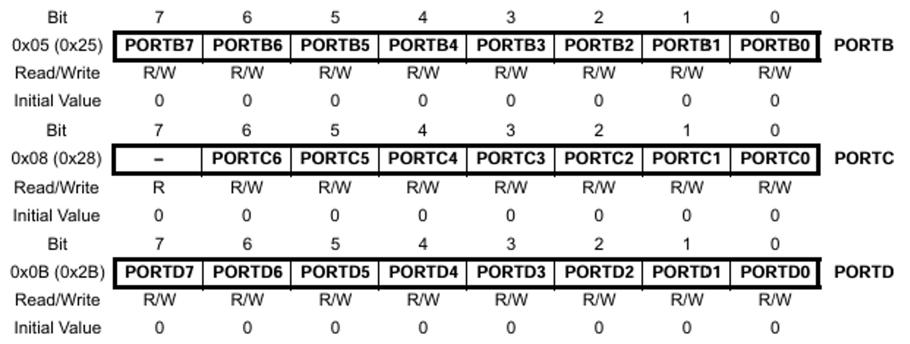

Introduction to Embedded C Programming
Embedded C is a specialized extension of the C programming language designed specifically for programming embedded systems. Unlike general-purpose applications, embedded systems require code that is highly efficient, hardware-specific, and often real-time capable. This guide will introduce you to the essentials of Embedded C programming, focusing on using avr-gcc to compile code for AVR microcontrollers, such as the ATmega328P.
Embedded languages include:
- ASM
- offers direct control over hardware, but it’s specific to each processor’s instruction set
- C
- is by far the most widely used language in embedded systems due to its close-to-hardware operations and minimal runtime overhead
- C++
- brings object-oriented programming (OOP) to embedded systems while retaining compatibility with C
- Python (Micro and Circuit)
- have been developed to run Python on microcontrollers
- Rust
- gaining popularity for embedded programming due to its safety features and zero-cost abstractions
- Ada and SPARK
- Ada is known for its reliability and is often used in safety-critical systems, while SPARK is a secure subset of Ada
- Java (Embedded JVMs)
- embedded JVMs allow Java to run on some resource-constrained systems
Why Use Embedded C?
Embedded C provides the familiarity and flexibility of the C language while allowing low-level hardware manipulation. Key reasons for using Embedded C include:
- Direct Hardware Access: Embedded C enables direct interaction with hardware registers.
- Portability: Code written in Embedded C can often be ported to different microcontrollers with minimal changes.
- Efficiency: Compiled C code can run close to the hardware, providing fast, deterministic behavior.
- Standardization: Embedded C adheres to ISO C standards, ensuring code compatibility and industry acceptance.
ATMEGA328P
The ATmega328P is an 8-bit microcontroller based on the AVR Architecture. While Atmel originally developed this microcontroller, it is now part of the Microchip Technology. This IC is very famous for being the main microcontroller in several Arduino Boards such as the Arduino UNO, Arduino Nan
It has 131 instructions, most of which execute in a single clock cycle. So, with its 16MHz clock frequency, you can expect a throughput of nearly 16 MIPS from ATmega328P (as it has 1 MIPS/MHz throughput)
ATmega328P Pinout and IC Packages
The ATmega328P is available in 4 IC Packages. The pinout and pin configuration slightly vary between the packages:
- 32-Lead TQFP (Thin Quad Flat Pack with Leads)
- 28-Pin SPDIP (Shrink Plastic Dual In-Line Package)
- 32-Pad VQFN (Very Thin Quad Flat No-Leads)
- 28-Pad VQFN (also known as MLF – Micro Lead Frame)

Fig. 1 Atmel ATMEGA328p Intergrated Circuit Packages

Fig. 2 Atmel ATMEGA328p
Table 1: Port and Pin Mapping
| PORT | PORT Pin | Arduino PIN | ATMEGA Pin |
|---|---|---|---|
| PORTB | PB0 | 8 | 14 |
| PORTB | PB1 | 9 | 15 |
| PORTB | PB2 | 10 | 16 |
| PORTB | PB3 | 11 | 17 |
| PORTB | PB4 | 12 | 18 |
| PORTB | PB5 | 13 | 19 |
| PORTB | PB6 | 20 | 9 |
| PORTB | PB7 | 21 | 10 |
| PORTC | PC0 | 14/A0 | 23 |
| PORTC | PC1 | 15/A1 | 24 |
| PORTC | PC2 | 16/A2 | 25 |
| PORTC | PC3 | 17/A3 | 26 |
| PORTC | PC4 | 18/A4 | 27 |
| PORTC | PC5 | 19/A5 | 28 |
| PORTC | PC6 | 22/RESET | 1 |
| PORTD | PD0 | 0/RXD | 2 |
| PORTD | PD1 | 1/TXD | 3 |
| PORTD | PD2 | 2 | 4 |
| PORTD | PD3 | 3 | 5 |
| PORTD | PD4 | 4 | 6 |
| PORTD | PD5 | 5 | 11 |
| PORTD | PD6 | 6 | 12 |
| PORTD | PD7 | 7 | 13 |
What are Registers?
A register is a small, high-speed storage location within a microcontroller, typically 8 or 16 bits wide. Each register has a specific function, such as controlling a port, configuring the microcontroller’s peripherals, or managing data. Registers are memory-mapped, meaning each register has a unique address that can be accessed directly through code.
Why Use Registers?
- Direct Hardware Control: Registers provide a direct way to control and interact with the microcontroller's hardware.
- High Speed: Accessing and modifying registers is faster than higher-level abstractions, which is essential in real-time applications.
- Precise Configuration: Registers enable fine-tuned control over peripherals and hardware settings, allowing for efficient power and performance management.
Example: Data Direction Register (DDR)
For example, each GPIO port (like PORTB, PORTC) has an associated Data Direction Register (DDR), which controls whether each pin is an input or output. Setting a bit in the DDR makes the corresponding pin an output, while clearing a bit makes it an input.
// Example for ATmega328P microcontroller
DDRB |= (1 << PB5); // Set PB5 as an output (LED pin
Here, DDRB is the data direction register for PORTB. By setting the bit corresponding to PB5 (Bit 5), we configure it as an output.
What are Ports?
A port in microcontroller terms refers to a group of pins on the microcontroller that are used for input and output. For the ATmega328P, ports are identified as PORTB, PORTC, and PORTD. Each port has multiple pins (bits) that can be configured independently as inputs or outputs, allowing for communication with external devices (e.g., LEDs, buttons, sensors).
-
PORT Register: Controls the output value of each pin. Setting a bit high (1) sets the pin high (voltage applied), and clearing it (0) sets it low (grounded).
-
PIN Register: Reads the input state of each pin. If the pin is high, reading from this register will return 1; if low, it will return 0.
Example: Configuring and Controlling a Port Pin
DDRB |= (1 << PB5); // Set PB5 as an output (LED connected to Pin 13 on Arduino)
PORTB |= (1 << PB5); // Set PB5 high (turn on LED)
PORTB &= ~(1 << PB5); // Set PB5 low (turn off LED)
In this example:
DDRBconfiguresPB5as an output.PORTBsetsPB5to high, turning on the LED.PORTBclearsPB5, turning off the LED
Key registers and their Roles
Let’s take a closer look at some commonly used registers for controlling GPIO, timers, and communication interfaces:
-
Data Direction Register (DDR)
-
Purpose: Configures each pin as an input or output.
-
Example:
DDRB,DDRB |= 0B100000; // PORTB5controls the data direction for PORTB.
-
-
PORT Register
-
Purpose: Sets the output value of each pin (either high or low).
-
Example:
PORTB |= (1 << PB5);orPORTB |= 0B100000; // PORTB5sets pin PB5 to high.
-
-
PIN Register
-
Purpose: Reads the current state of an input pin.
-
Example:
if (PINB & (1 << PB0)) {...}checks if PB0 is high.
-
-
Peripheral Control Registers
- Each peripheral (UART, SPI, ADC, etc.) has its own set of control registers to configure and manage its operation. For example,
UCSR0Bin ATmega328P controls UART transmission and reception.
- Each peripheral (UART, SPI, ADC, etc.) has its own set of control registers to configure and manage its operation. For example,
Example code:
#include <avr/io.h>
#include <util/delay.h>
#define F_CPU 16000000
#define BLINK_DELAY_MS 2000
int main (void)
{
// Arduino digital pin 13 (pin 5 of PORTB) for output
DDRB |= 0B100000; // PORTB5
while(1) {
// turn LED on
PORTB |= 0B100000; // PORTB5
_delay_ms(BLINK_DELAY_MS);
// turn LED off
PORTB &= ~ 0B100000; // PORTB5
_delay_ms(BLINK_DELAY_MS);
}
}
Why Direct Register Manipulation is Important in Embedded Systems
-
Efficient Resource Usage: Microcontrollers typically have limited resources. Accessing registers directly minimizes overhead and ensures efficient use of processing power and memory.
-
Precise Timing Control: Certain applications (e.g., PWM, interrupts) require precise control over timing. Directly setting registers allows you to meet these timing requirements more accurately than using higher-level abstractions.
-
Reduced Abstraction Layer: While high-level abstractions (such as those provided in libraries like Arduino) make programming easier, they add layers that slow down processing. Direct register access is essential when maximum efficiency is required, especially in real-time applications.
#include <avr/io.h> #include <util/delay.h> #define LED_PIN PB5 // Pin connected to the LED int main() { // Set the LED pin as output DDRB |= (1 << LED_PIN); // DDRB controls data direction for PORTB while (1) { // Toggle the LED PORTB ^= (1 << LED_PIN); // XOR operation to toggle LED _delay_ms(500); // Delay of 500 milliseconds } return 0; }Explanation:
DDRB |= (1 << LED_PIN);: ConfiguresPB5(PORTBPin 5) as an output pin.PORTB ^= (1 << LED_PIN);: Toggles the state of the pin, effectively blinking theLED._delay_ms(500);: Adds a 500-millisecond delay between toggles, making theLEDblink on and off at a 1-second interval.